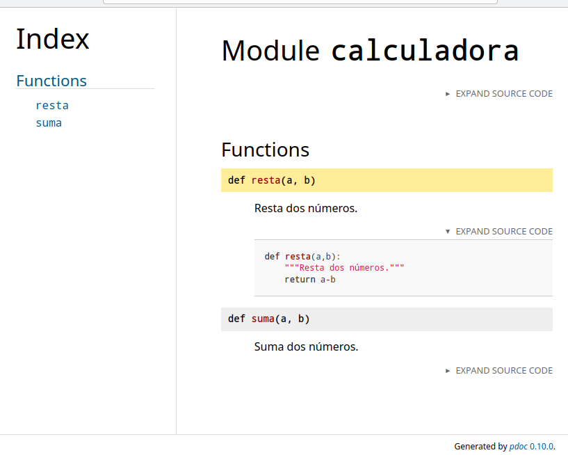
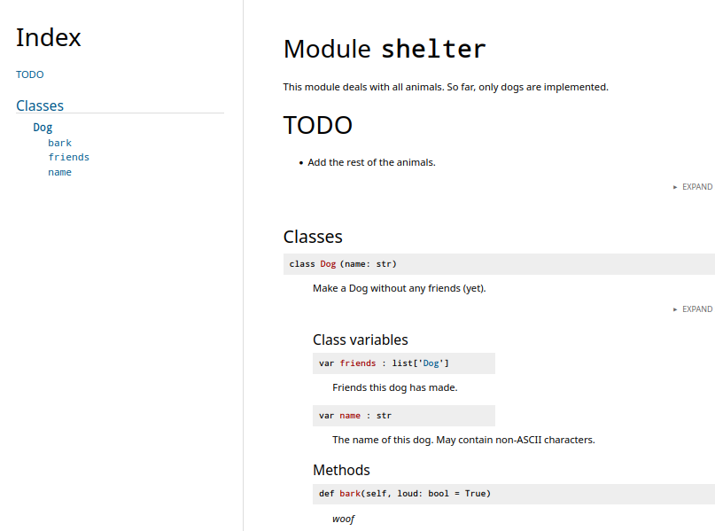
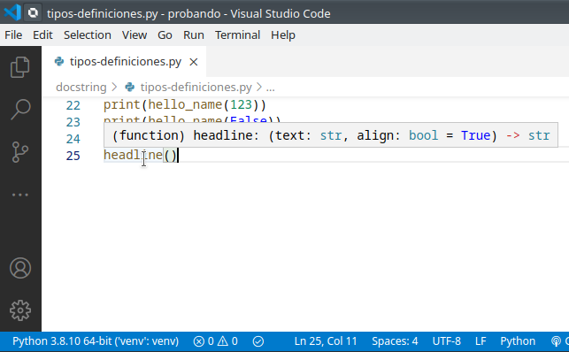

Python: Calidad y documentación del código
1. Documentación en Python
“Code is more often read than written.”
Guido van Rossum
1.1. Comentar vs documentar el código
Hay que diferenciar documentar de comentar.
-
Comentar el código
- Propósito: Notas rápidas para el programador en el futuro o compañeros, desactivar código temporalmente, explicar decisiones de diseño.
- Dónde: Directamente en el archivo fuente.
- Cuándo: Solo cuando el código no es lo suficientemente claro por sí mismo, para lógica compleja, o por razones legales/licencias.
- Evita comentarios obvios ("// sumar dos números") o desactualizados, que son ruido y engañan.
-
Documentar el código
- Propósito: Explicar el funcionamiento general, arquitectura, API, y cómo usar el software a otros desarrolladores o usuarios finales.
- Dónde: Archivos README, Wikis,herramientas de generación de documentación o comentarios en formato especial.
- Cuándo: Siempre es necesario para proyectos compartidos o públicos.
- Herramientas: Usar generadores que extraen información de comentarios bien formateados para crear manuales.
En python los comentarios se inician con el carácter #
1.2. Generando la documentación
Gracias a los docstrings y sus formatos existe la posibilidad de generar la documentación de un proyecto, modulo, clase, etc. de forma automática a partir del código. Hay diferentes soluciones y una de ellas es el módulo pdoc3.
Para ver su funcionamiento debe instalar dicho modulo en un entorno virtual:
(venv) clases@d12:~/src_doc$ pip install pdoc3
Collecting pdoc3
Downloading pdoc3-0.10.0-py3-none-any.whl (135 kB)
|████████████████████████████████| 135 kB 3.6 MB/s
....
Installing collected packages: MarkupSafe, mako, zipp, importlib-metadata, markdown, pdoc3
Successfully installed MarkupSafe-2.0.1 importlib-metadata-4.8.2 mako-1.1.6 markdown-3.3.6 pdoc3-0.10.0 zipp-3.6.0
(venv) clases@d12:~/src_doc$pdoc3 --version
pdoc3 0.10.0
(venv) clases@d12:~/src_doc$
Si lo invoca con el módulo calculadora (o cualquier otro de los ejemplos previos) muestra en la salida estándar la documentación generada en base a los docstrings presentes en el código:
(venv) clases@d12:~//src_doc$ cat calculadora.py
def suma(a:int,b:int) ->int:
return a + b
def resta(a,b):
""" Resta dos numeros."""
return a-b
(venv) clases@d12:~/src_doc$ pdoc3 calculadora
Module calculadora
==================
Functions
---------
`resta(a, b)`
: Resta dos numeros.
`suma(a: int, b: int) ‑> int`
:
(venv) clases@d12:~/PPS/calidad/src_doc$
Es más interesante generar dicha documentación en formato HTML con la opción --html
Observe que se generan títulos, un índice, documentación a partir de los docstring, etc. Ademaś permite ver el código con el desplegable "Expand Source Code":

Observe un ejemplo de un módulo con una clase:
""" This module deals with all animals. So far, only dogs are implemented.
# TODO
- Add the rest of the animals.
"""
from __future__ import annotations
class Dog:
name: str
"""The name. May contain non-ASCII characters."""
friends: list ["Dog"]
"""Friends this dog has made."""
def __init__(self, name: str):
"""Make a Dog without any friends (yet)."""
self.name = name
self.friends = []
def bark(self, loud: bool = True):
"""*woof*"""
Y cómo se genera la documentación por pdoc3 en formato HTML:

1.3. Comentar código con anotaciones (Type Hinting)
Es posible añadir información sobre los tipos de los argumentos o el valor de retorno en el propio código. Esto se logra con las anotaciones de tipo (type hint). Pero tenga en cuenta que estas anotaciones no implican comprobación de tipos al ejecutar.
Para añadir anotaciones de tipo
- en los argumentos: tras el argumento el caracter ":" y el tipo del argumento.
- en el valor de retorno: tras el paréntesis de cierre de los argumentos una flecha "->"y el tipo de retorno.
Observe anotaciones en este ejemplo
# función sin tipos..
def hello(name):
return(f"Hello {name}")
#funciones con tipos de parámetros y tipo retorno
def hello_name(name: str) -> str:
return(f"Hello {name}")
def headline(text: str, align: bool = True) -> str:
if align:
return f"{text.title()}\n{'-' * len(text)}"
else:
return f" {text.title()} ".center(50, "o")
- Mejorar la documentación del código
- Que herramientas como un editor, a la hora de añadir una llamada a una función nos de una ayuda visual sobre la misma y los tipos esperados:

2. Calidad en el código
El código se considera de calidad si:
- Hace lo que se supone que debe hacer
- No contiene fallos o da problemas.
- Es sencillo de leer, mantener y modificar para añadir mejoras.
Es en ese tercer apartado en el que nos centramos en este documento.
2.1. Guías de estilo
La guía fundamental es la Python Enhancement Proposal 8 o PEP-8 que presenta las directrices a seguir para escribir código Python.
Se indican cuestiones como: - Usar 4 espacios en el sangrado del códigoy no usar tabuladores. - Una longitud máxima de 79 caracteres en cada línea. - Sobre las líneas en blanco: - Rodear las funciones de primer nivel y clases con dos líneas en blanco - Los métodos dentro de una clase con una única linea en blanco - Imports: - Normalmente en líneas separadas - Primero los estándar, luego módulos de terceros, luego los propios - etc.
Adicionalmente hay otras guías de estilo especificas para empresas, por ejemplo la de Google.
2.2. Comentarios y documentación
Se ha trabajado este apartado previamente: uso de docstrings, type hint y la herramienta pdoc3.
3. Ejercicio: generar documentación
- Recuperar o crear el módulo
calculadora. -
Documentar ese módulo con docstrings. Documentar los argumentos de las funciones y los valores de retorno de los dos métodos usando dos formatos distintos (ver anexo):
-
formato de Google.
- formato de numpy.
Nota: Puede usar pdoc3 en modo servidor con la opción --http localhost:8080 y editar y ver los cambios en la documentación:
(venv) @tos:~/docstring$ pdoc3 --http localhost:8080 calculadora
Starting pdoc server on localhost:8080
pdoc server ready at http://localhost:8080
...
4. Enlaces adicionales
- PEP 257 – Docstring Conventions: https://www.python.org/dev/peps/pep-0257/
- Syntax and best practices for docstrings used with the numpy: https://numpydoc.readthedocs.io/en/latest/format.html
- Google Comments and Docstrings: https://google.github.io/styleguide/pyguide.html#38-comments-and-docstrings
- PEP 484 – Type Hints: https://peps.python.org/pep-0484/
- Documenting Python: A Complete Guide: https://realpython.com/documenting-python-code/?utm_source=pocket_mylist
5. Anexo docstrings
El interprete de comandos python proporciona ayuda sobre comandos, clases, etc. usando help():
>>> help(str)
Help on class str in module builtins:
class str(object)
| str(object='') -> str
| str(bytes_or_buffer[, encoding[, errors]]) -> str
|
| Create a new string object ....
| ....
>>>
str con dir()
Para obtener ayuda del método split:
>>> help(str.split)
Help on method_descriptor:
split(self, /, sep=None, maxsplit=-1)
Return a list of the substrings in the string, using sep as the separator string.
...
Dentro de esa información se encuentra el atributo __doc__ que almacena esa información . Si accede a dicho atributo se muestra la ayuda de dicho objeto:
>>> print(str.__doc__)
str(object='') -> str
str(bytes_or_buffer[, encoding[, errors]]) -> str
Create a new string object from the given object. If encoding or
...
>>>
En el caso de split:
>>> print(str.split.__doc__)
Return a list of the substrings in the string, using sep as the separator string.
sep
The separator used to split the string.
...
>>>
Es decir, si tiene una clase o una función puede crear o modificar el atributo .__doc__ y estaría generando el docstring de la ayuda.
En el siguiente ejemplo se crea una función y modifica .__doc__
>>> def hola(name):
... print(f"hola {name}. Bienvenido")
...
>>> hola.__doc__ = "Funcion que saluda con nombre"
>>> help(hola)
Help on function hola in module __main__:
hola(name)
funcion que saluda con nombre
(END)
>>>
Evidentemente este método de trabajo (modificar el atributo __doc__) no es práctico para documentar. En su lugar es preferible usar comentarios en el código siguiendo un determinado formato.
Observe en el siguiente ejemplo un comentario justo al inicio de la función. Si lo añade de esa forma se le asigna de froma automática al atributo .__doc__:
>>> def hola(name):
... """ Funcion que saluda con parametro nombre."""
... print(f"hola {name}. Bienvenido")
...
>>> help(hola)
Help on function hola in module __main__:
hola(name)
Funcion que saluda con parametro nombre.
(END)
>>>
En el siguiente apartado se muestra que son los docstrings y cómo utilizarlos.
5.1. Docstrings línea/multilinea
A docstring is a string literal that occurs as the first statement in a module, function, class, or method definition. Such a docstring becomes the
__doc__special attribute of that object.Docstring conventions are described within PEP 257 (Python Enhancement Proposals) https://www.python.org/dev/peps/pep-0257/
Por lo tanto es un literal que debe aparecer en la primera línea del módulo, clase o función. Al aparecer en ese lugar se convierte en el atributo__doc__ . Pueden ser de una línea o multilínea.
5.1.1. Docstrings de una línea
Deben cumplir:
- Una única línea
- Empezar con mayúscula,
- Terminar en punto.
- Sin líneas en blanco ni antes ni después.
5.1.2. Docstrings multilínea
Si la ayuda necesita de más texto el formato debería ser:
- Una primera línea con el resumen de la ayuda
- Una línea en blanco
- Texto con la descripción en varias líneas
- Se cierra el literal
- Y una línea en blanco tras el literal
Observe este ejemplo tomado de una función especificando los parámetros y el valor de retorno:
"""Gets and prints the spreadsheet's header columns
Parameters
----------
file_loc : str
The file location of the spreadsheet
print_cols : bool, optional
A flag used to print the columns to the console (default is False)
Returns
-------
list
a list of strings representing the header columns
"""
5.2. Clasificación por tipos
Se pueden clasificar los docstrings en función de que se apliquen a paquetes o módulos, clases o scripts. Por ejemplo, en el caso de los módulos se considera que deberían contener:
- un breve resumen de propósito y comportamiento
- Los métodos públicos con una breve descripción
- Las propiedades (atributos) de la clase
- ...
Tiene información más detallada en este enlace: https://realpython.com/documenting-python-code/#docstring-types
5.3. Clasificación por formatos o normas de estilo
Resulta que existen distintas "maneras" de organizar la información dentro del docstring. Algunos de estos formatos posibles son:
| Formatting Type | Description |
|---|---|
| NumPy/SciPy docstrings | Combination of reStructured and GoogleDocstrings and supported by Sphinx |
| PyDoc | Standard documentation module for Python and supported by Sphinx |
| EpyDoc | Render Epytext as series of HTML documents and a tool for generating API documentation for Python modules based on their Docstrings |
| Google Docstrings | Google's Style |
Vea como ejemplo la diferencia entre dos de ellos, NumPY y Google. Con el formato de Google el docstring de un método o función sería similar a:
"""Gets and prints the spreadsheet's header columns
Args:
file_loc (str): The file location of the spreadsheet
print_cols (bool): A flag used to print the columns to the console
(default is False)
Returns:
list: a list of strings representing the header columns
"""
Con Pynum la forma de especificar los parámetros y el valor de retorno es diferente: